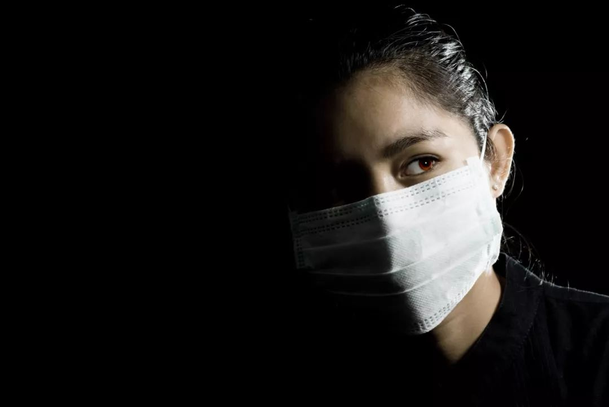
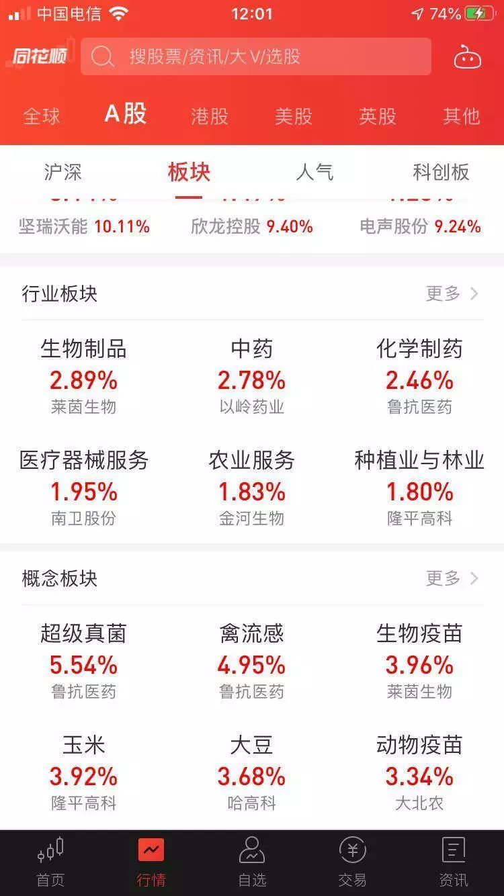
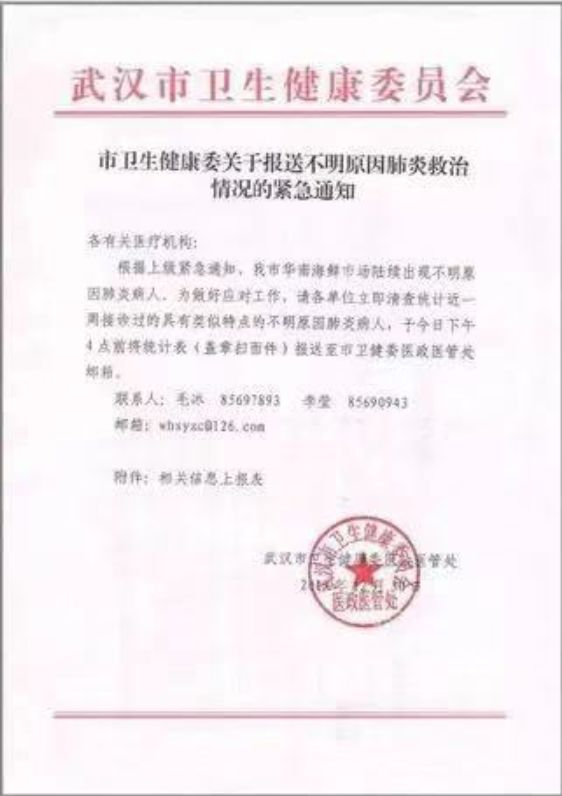
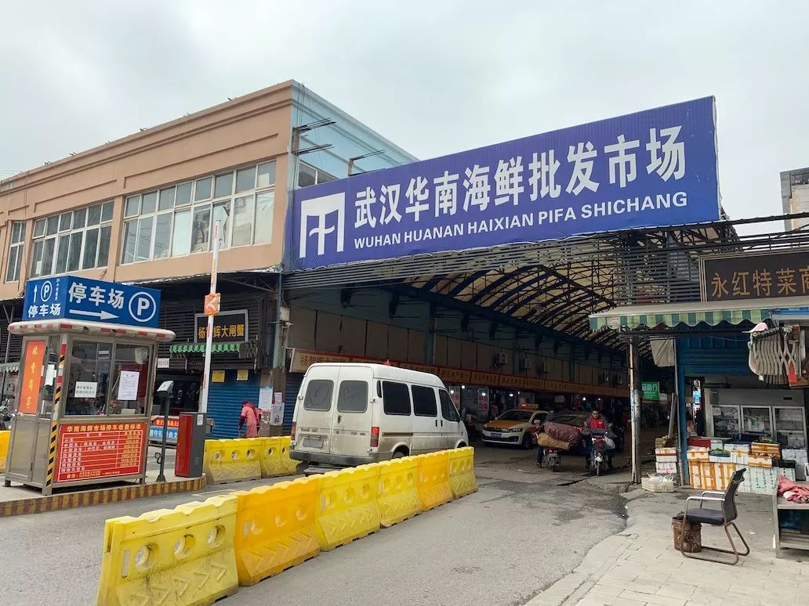
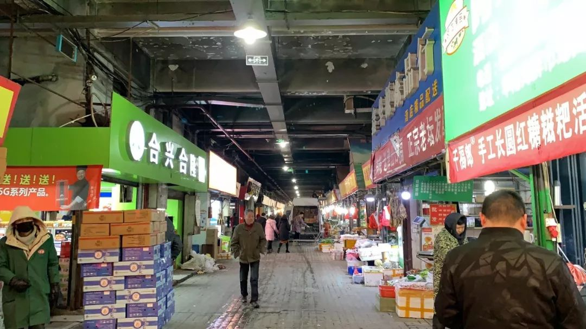

武汉确认27例不明原因肺炎是病毒性肺炎，不确定是SARS


共27例病例，大多是武汉华南海鲜城经营户。7例病情危重，其余病情可控，有2例病情好转拟近期出院。
不明原因肺炎，是2003年SARS事件后，对SARS病例和人禽流感病例及其它传染性呼吸道疾病监测中用的概念。
2004年以来，全国各地也曾多次发现过不明原因肺炎，但并未大规模传播。
知情人士透露，一家基因测序公司到武汉进行了初步检测，结果是高度疑似SARS。但这不是最终结果，今年其他地区也出现过类似高度疑似但最终排除的情况。


△图片来源：Yestone
昨天（12月30日）晚上开始，武汉出现多例不明原因肺炎的消息开始流传。今天早上，八点健闻致电武汉疾控中心，工作人员告诉我们：
还不能确认是SARS，病人已经隔离，卫健委专家已经来武汉了，不用惊慌。
SARS（Severe Acute Respiratory Syndrome），严重急性呼吸综合征，由 SARS冠状病毒（SARS CoV.)感染引起的烈性传染病。SARS冠状病毒可以感染人或动物，具有高度的传染性和致死性，许多患者在感染早期快速死亡。
自2002年11月起，SARS疫情曾迅速蔓延至全球数十个国家和地区，截至2003年7月，全球发病人数达到8098例，其中死亡774例，全球病死率接近10%,其中近半数死者为超过65岁的老年人。在我国，SARS疫情首发于广东，而以北京最为严重，随着全国范围的严防严控，患者隔离治疗，疫情迅速得到遏制。2003年疫情解除，2004年之后未有临床感染、发病的报告。
就在刚才，武汉卫健委发布消息，不明原因肺炎是病毒性肺炎，目前已发现27例病例，其中7例病情严重，其余病例病情稳定可控，有2例病情好转拟于近期出院。到目前为止调查未发现明显人传人现象，未发现医务人员感染。目前对病原的检测及感染原因的调查正在进行中。
不明原因肺炎，是SARS事件后，2004年当时的卫生部一份文件中出现的概念。文件中说：为筛查可能的SARS病例和人禽流感病例及其它传染性呼吸道疾病，早期发出预警并采取相应的防控措施，从而防范SARS疫情的扩散蔓延和可能出现的人禽流感疫情，卫生部日前制定了《全国不明原因肺炎病例监测实施方案（试行）》。
文件发布后，全国各地也曾多次发现过不明原因肺炎，但并未大规模传播。
这次武汉的疫情之所以很紧张，据一位知情人士透露，是因为一家基因测序公司到武汉进行了初步检测，检测结果是高度疑似SARS。但这并不是最终的结果，冠状病毒有很多种，目前只是一个高度疑似。“国家卫健委已经介入，按照程序的话，会将病毒带回北京，多家检测比对来最后确认结果。”
“据了解，今年在其他地区也出现过类似高度疑似但最终排除的情况。大家静观结果，不必恐慌。”另一位知情人士表示。
今天早上，抗病毒概念股拉升，鲁抗医药、联环药业、莱茵生物和四环生物等4股涨停。

实地探访华南海鲜城：经过消毒后正常经营
昨天晚上，两份盖有武汉市卫生健康委员会医政管理处公章的红头文件在网络上广泛传播。文件透露，武汉市华南海鲜市场陆续出现不明原因肺炎病人。
一份名为《市卫生健康委关于报送不明原因肺炎救治情况的紧急通知》，要求各单位清查近期去过华南海鲜市场或在华南海鲜市场附近工作的不明原因肺炎病人，并上报至武汉市卫健委医政处。

另一份名为《关于做好不明原因肺炎救治工作的紧急通知》指出，部分医疗机构陆续出现不明原因肺炎病人。各医疗机构要强化门急诊管理，严格执行首诊负责制，发现不明原因肺炎病人积极调动力量就地救治。要有针对性地加强呼吸、感染科、重症医学等多学科专业力量，畅通绿色通道。

“医院确实接收到了这两份文件。”武汉一家三甲医院的主任医生告诉八点健闻，已经在排查疑似病例。武汉协和医院的一名主任医师同样表示，目前是不明原因的肺炎，没有确认病原菌，不能断定是SARS病毒。
12月31日上午，八点健闻致电武汉市疾病预防控制中心得知，目前的进度仍然是确认肺炎，但是还没有确定SARS。国家卫健委已派专家抵达武汉。目前，相关病毒分型检测、隔离治疗、舆情管控、终末消毒等工作正在进行。
今天下午，八点健闻的一位朋友到达华南海鲜城，看到这里仍在正常经营。

△华南海鲜市场，Hank摄
市场内的商户说，早上有人来进行过消毒，他们觉得正常经营没有问题。

△华南海鲜市场内部，Hank摄
不明原因肺炎：后SARS时代的监控重点
病原体明确的肺炎往往在临床表现中有一定的规律，如肺炎球菌性肺炎有发热、咳嗽，肺部听诊有小水泡音，胸片显示片状阴影，可称为典型性肺炎。
与之相对的，发热、咳嗽、肺部听诊、胸部X片等临床表现均不典型的肺炎，被称为非典型性肺炎，泛指所有由某种未知的病原体引起的肺炎，可能是冠状病毒、肺炎支原体、肺炎衣原体或嗜肺军团菌引起的肺炎症状，也可泛指不是由细菌所引起的肺炎症状。
非典型肺炎并不是可怕的疾病，也不是“不治之症”，只是一种暂时还没有找到明确的病原体之前的过渡性名称。
不明原因肺炎，是继SARS流行之后，卫生部为了更好地及时发现和处理SARS、人禽流感以及其他表现类似、具有一定传染性的肺炎而提出的一个名词。严格来说，“不明原因肺炎”不是一个严谨的医学概念，而是作为及时发现可疑病例、早期发出预警并采取相应的防控措施的筛查手段。
具体来看，不明原因肺炎是指同时具备以下4条不能作出明确诊断的肺炎病例：
1、发热（≥38℃）；
2、具有肺炎或急性呼吸窘迫综合征（ARDS）的影像学特征；
3、发病早期白细胞总数降低或正常，或淋巴细胞分类计数减少；
4、经抗生素规范治疗3-5天，病情无明显改善。
在不明原因肺炎病例中，SARS和人禽流感是两类需要重点预警的情况。根据2004年原卫生部发布的《全国不明原因肺炎病例监测实施方案（试行）》，符合以下情况之一的不明原因肺炎病例可定为SARS预警病例：
1、地市级专家组会诊不能排除SARS的不明原因肺炎病例；
2、两例或以上有可疑流行病学联系的不明原因肺炎病例；
3、重点人群发生不明原因肺炎病例：医疗机构工作人员中出现的不明原因肺炎病例，可能暴露于SARS病毒或潜在感染性材料的人员中出现的不明原因肺炎病例（如从事SARS科研、检测、试剂和疫苗生产等相关工作人员），接触野生动物的人员发生的不明原因肺炎病例；
4、不明原因的肺炎死亡病例。
一位上海市疾控中心防疫科的工作人员告诉八点健闻，“目前对于不明原因肺炎的处置有标准流程，包括发病报告、留学病学调查、密切接触者管理等。”
另一位业内人士则说，上一次SARS的消失，是因为病毒自我快速变异后，不再对人体构成威胁，如果卷土重来，预案很多。
查询知网，可以看到很多对不明原因肺炎的检测报告，都没有引起大规模的传播。

根据武汉卫健委的通报，病毒性肺炎多见于冬春季，可散发或暴发流行，临床主要表现为发热、浑身酸痛、少部分有呼吸困难，肺部浸润影。病毒性肺炎与病毒的毒力、感染途径以及宿主的年龄、免疫状态有关。引起病毒性肺炎的病毒以流行性感冒病毒为常见，其他为副流感病毒、巨细胞病毒、腺病毒、鼻病毒、冠状病毒等。确诊则有赖于病原学检查，包括病毒分离、血清学检查以及病毒抗原及核酸检测。该病可防可控，预防上保持室内空气流通，避免到封闭、空气不流通的公众场合和人多集中地方，外出可佩戴口罩。临床以对症治疗为主，需卧床休息。如有上述症状，特别是持续发热不退，要及时到医疗机构就诊。
谭卓曌|撰稿
微信号：tzz19930706
吴晔婷|撰稿
微信号：wytlucky19
王吉陆|责编
微信号：wangjilu006


政策巨变挤破医药投资泡沫，但头部项目和明星科学家仍受资本追逐

我们尊重原创版权，未经允许请勿转载。
授权转载
郑琪 微信号: 1281949389
商务合作
上海：leslee 13916263824
北京：Jessie 13911125922
线索爆料、意见反馈，加入核心读者社群
请扫码联系健闻君

让朋友们看到你也在看
↓↓↓